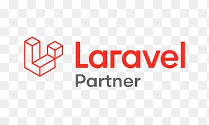
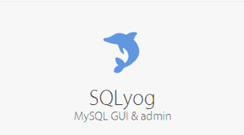
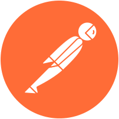

HTML Developer
CSS Developer
An HTML Developer, often referred to as a Front-End Developer, is responsible for creating the structure and layout of web pages using HyperText Markup Language (HTML).
A CSS Developer, often referred to as a Front-End Developer or Web Stylist, is a professional responsible for styling and visually enhancing web pages by using Cascading Style Sheets (CSS).

JS Developer
A JavaScript Developer, often referred to as a Front-End Developer or Web Developer, specializes in creating interactive and dynamic web applications by using JavaScript, along with HTML and CSS.

Laravel Developer
Laravel 6 Mounth Work Experience.A Laravel Developer is a specialized web developer who focuses on creating web applications using the Laravel PHP framework.

CakePHP Developer
CakePHP1.2 1 year Work Experience.A CakePHP Developer is a specialized web developer who focuses on building web applications using the CakePHP framework, a popular open-source PHP framework known for its rapid development capabilities and convention over configuration approach.

SQL Developer
Sql yog 1 year work Experience.
A SQL Developer is a specialized professional responsible for designing, developing, and maintaining database systems using SQL (Structured Query Language).

Api Developer
Postman is a popular and powerful tool for testing and documenting APIs. It provides a user-friendly interface for sending HTTP requests to APIs, receiving responses, and managing your API testing workflow.